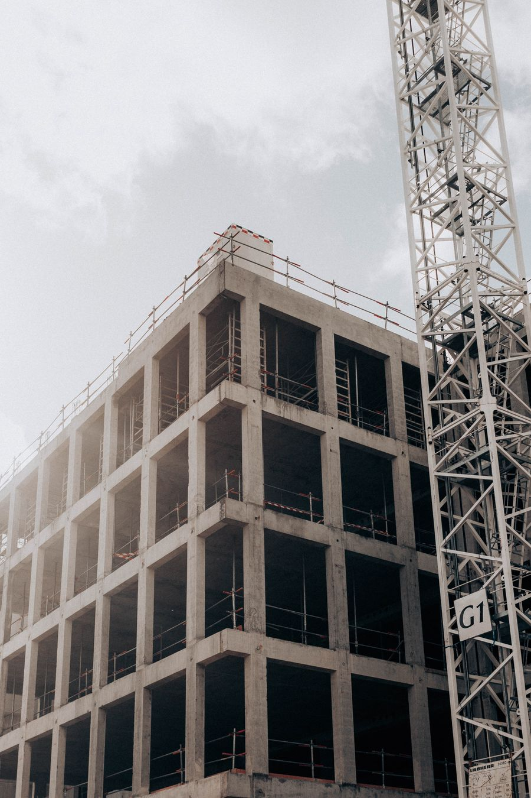
Construção de edifícios
Execução de obras residenciais, comerciais e industriais, do planejamento à entrega.
Ver detalhesEngenharia, obras e instalações
A Instalmec atua em projetos, estudos e execução de obras com foco em segurança, prazo, qualidade de entrega e responsabilidade ambiental.
Atendimento comercial e técnico para obras, manutenções e escopos sob demanda no RJ.
Serviços
Escopos dimensionados conforme a necessidade de cada cliente, com acompanhamento técnico e foco na continuidade da operação.

Execução de obras residenciais, comerciais e industriais, do planejamento à entrega.
Ver detalhes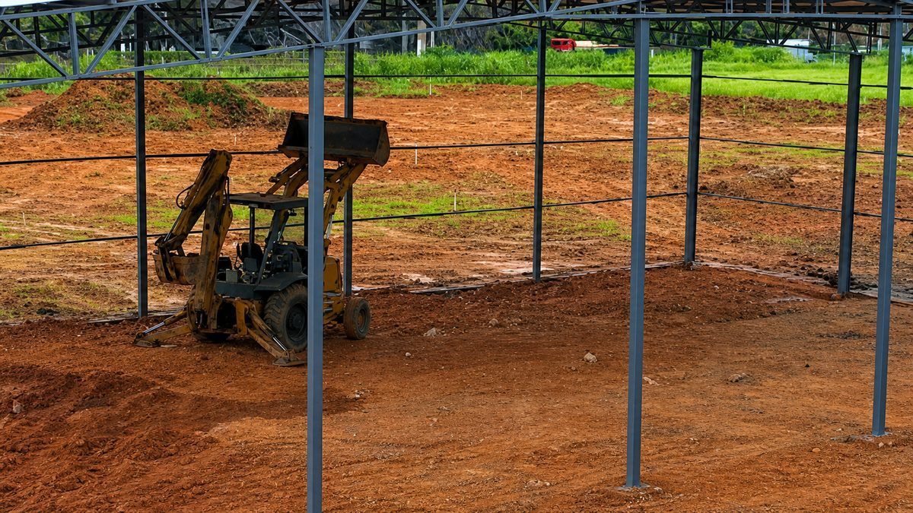
Preparação de terreno, corte, aterro, nivelamento e compactação para bases seguras.
Ver detalhes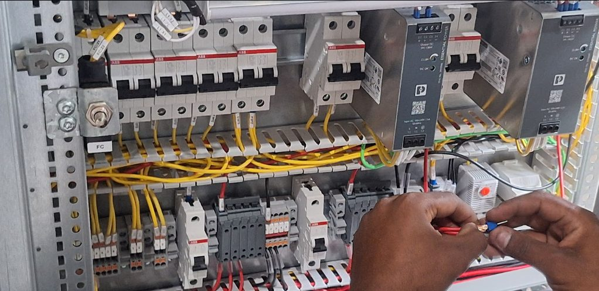
Instalação, manutenção e adequação de sistemas elétricos em edifícios e unidades produtivas.
Ver detalhes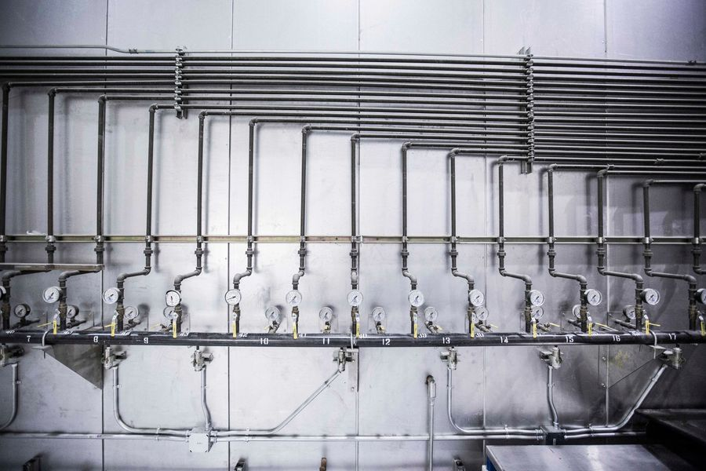
Tubulações de água, esgoto e sistemas sanitários conforme requisitos técnicos da obra.
Ver detalhes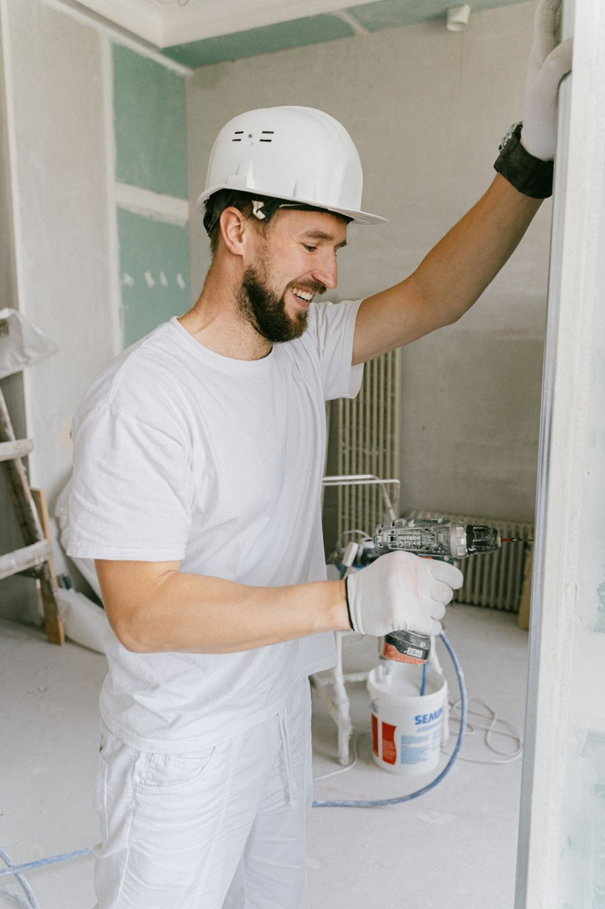
Tratamento de superfícies, pintura interna e externa, reparos e acabamento final.
Ver detalhes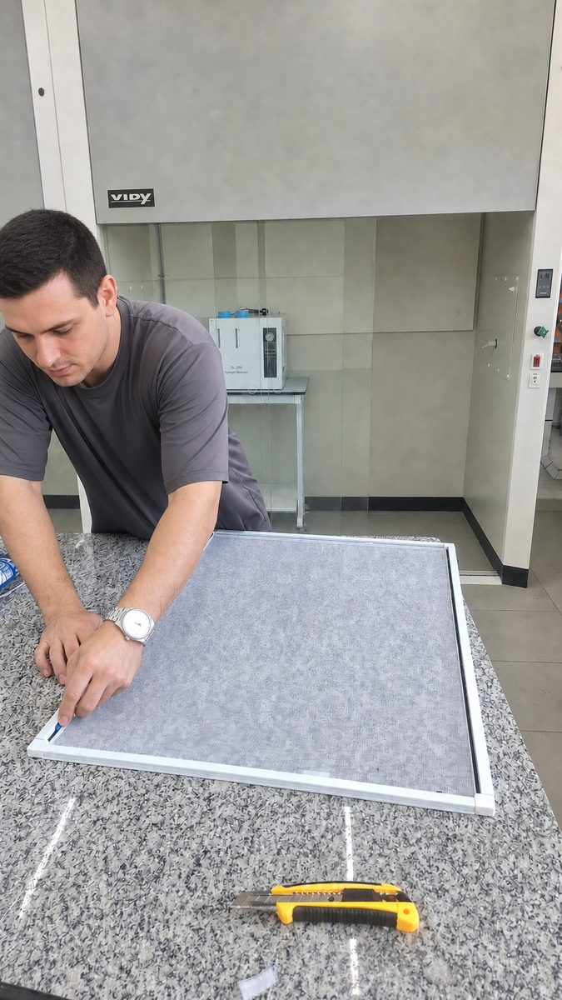
Consultoria, projetos, gerenciamento, fiscalização e controle de qualidade.
Ver detalhes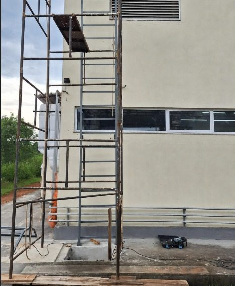
Recuperação de edificações com atenção à integridade estrutural, estética e funcional.
Ver detalhes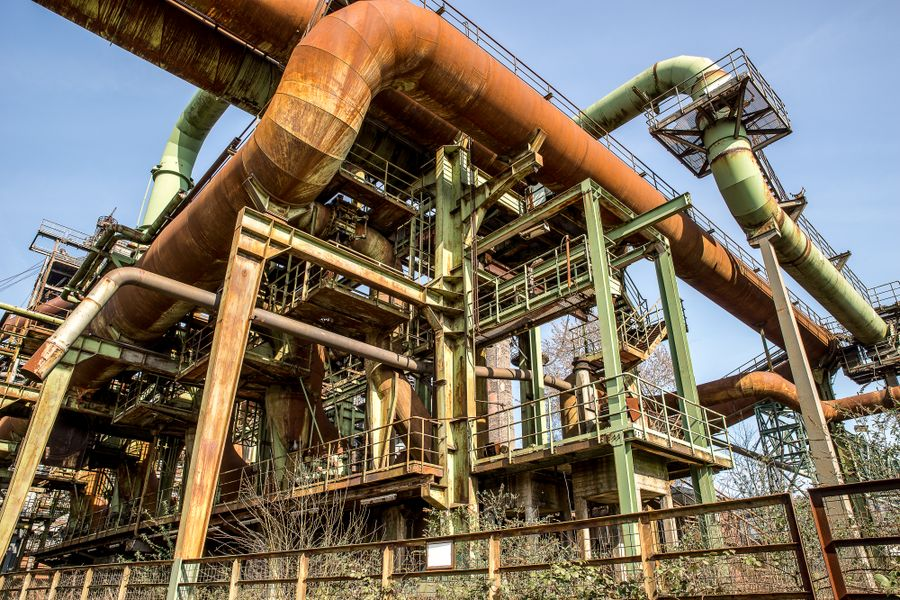
Redes e centrais para gás, ar comprimido, vácuo, oxigênio, óleo e fluidos industriais.
Ver detalhes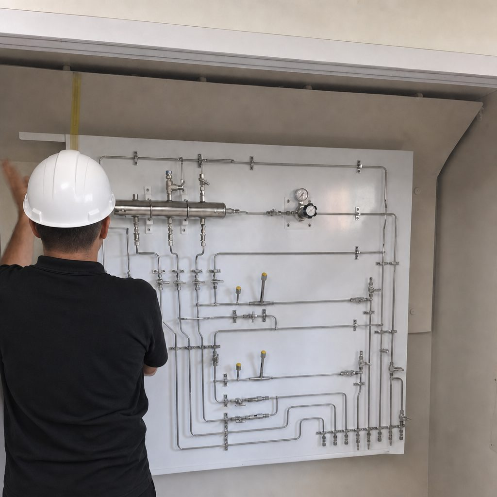
Quem somos
A Instalmec Construções e Instalações LTDA é uma empresa do setor de engenharia, com atuação em obras civis, reformas, instalações prediais e demandas industriais. O trabalho é conduzido com planejamento, mão de obra qualificada e acompanhamento das etapas críticas de execução.
Método
Uma página profissional precisa mostrar como a empresa trabalha. Aqui, o fluxo é objetivo e compatível com escopos técnicos reais.
Análise do local, do escopo, das restrições técnicas e dos prazos envolvidos.
Definição de etapas, materiais, equipe, sequência executiva e controles necessários.
Realização dos serviços com acompanhamento de qualidade, segurança e produtividade.
Conferência final, organização do ambiente e orientação para uso ou manutenção.
Projetos
Imagens de referência dos tipos de serviço atendidos: estrutura, alvenaria, impermeabilização, acabamento e intervenção técnica.
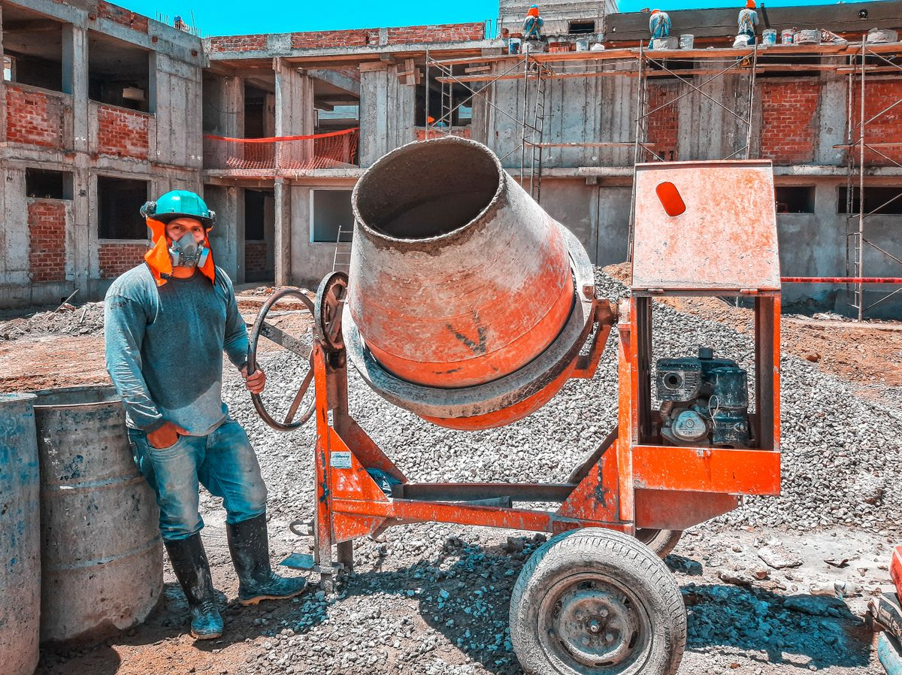
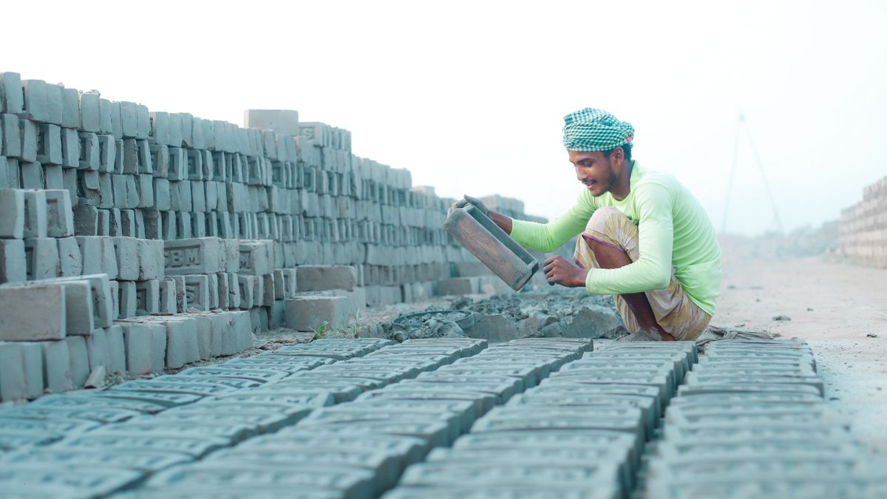
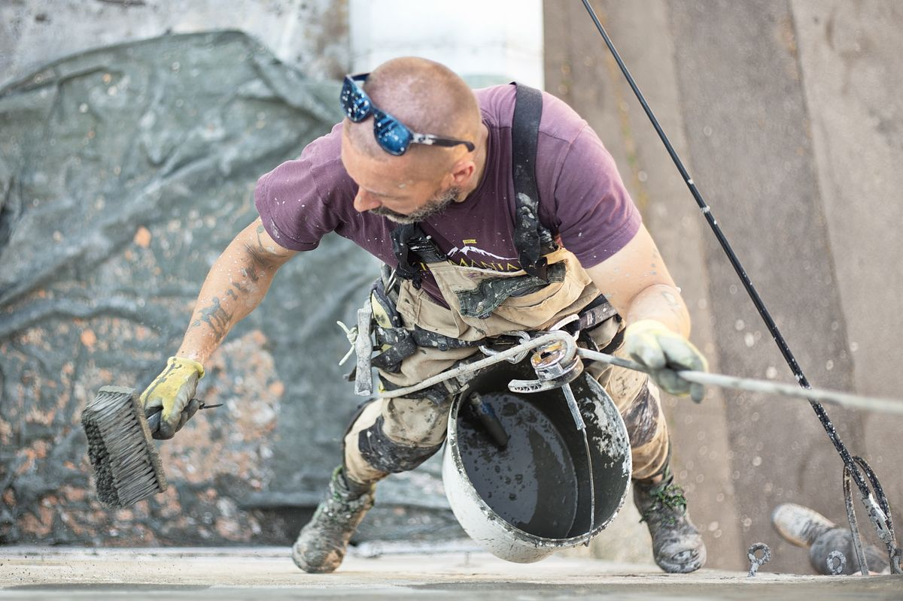
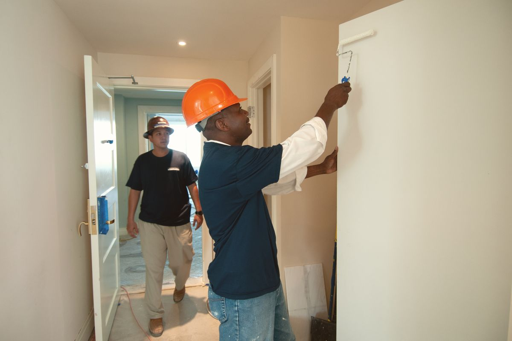
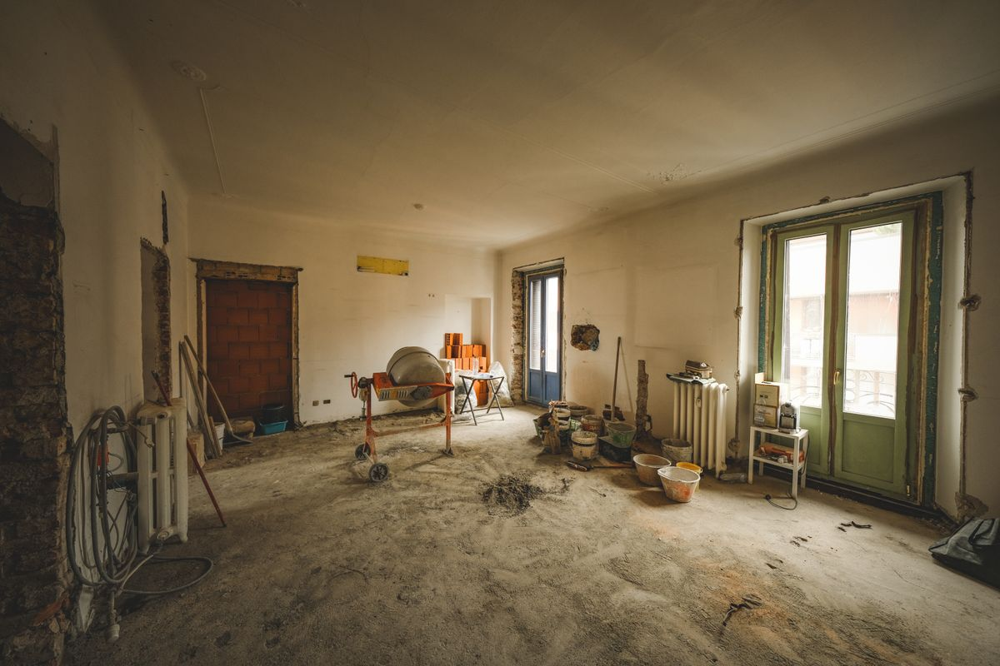
Conformidade
Removemos mensagens genéricas, créditos de template, links sem destino e textos que soavam artificiais. A página agora informa o que a empresa faz, onde atua e como entrar em contato.
Textos corrigidos, acentuação normalizada e informações de contato tratadas para leitura profissional.
Não foram adicionados clientes, certificações, prêmios ou avaliações sem fonte comprovável.
Telefone, e-mail e endereço aparecem em local visível, com links acionáveis quando aplicável.
Contato
Para obras, manutenção ou instalações, informe o local, tipo de serviço, prazo desejado e qualquer documentação disponível.
Endereço Estrada de Xerém, 05 - Duque de Caxias/RJ
Serviço